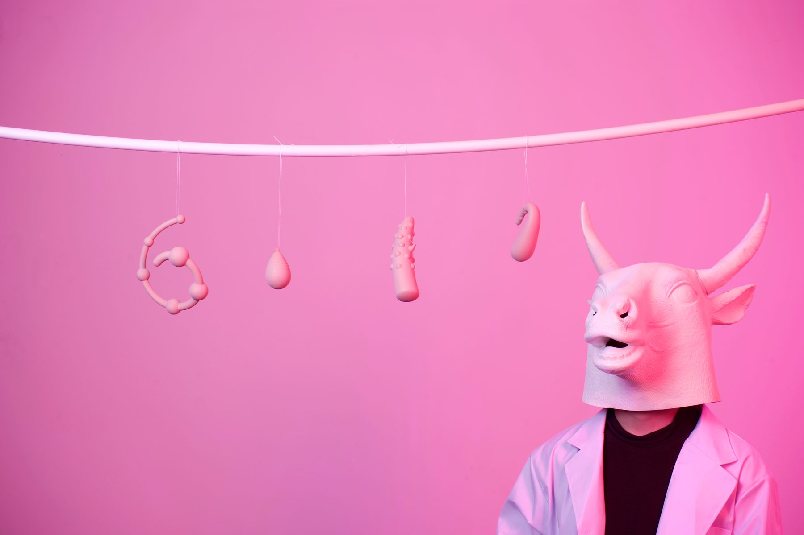
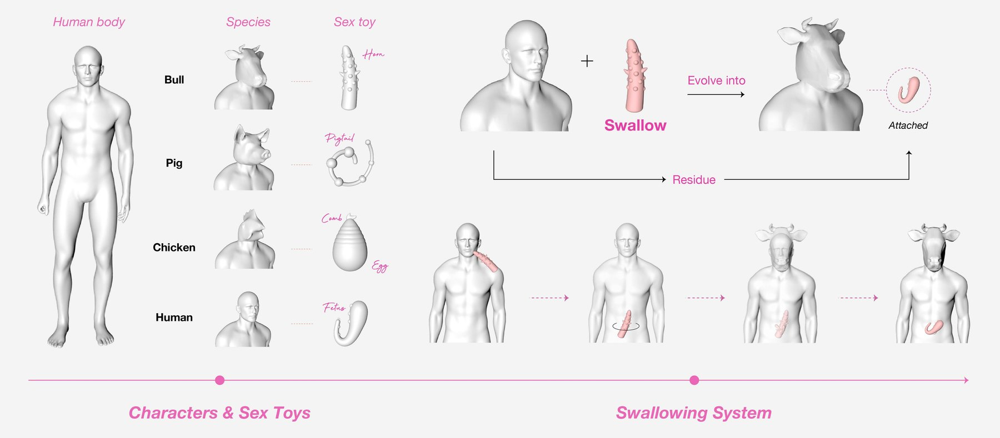
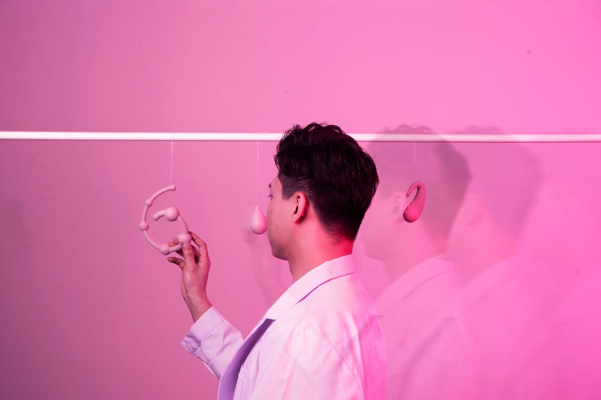
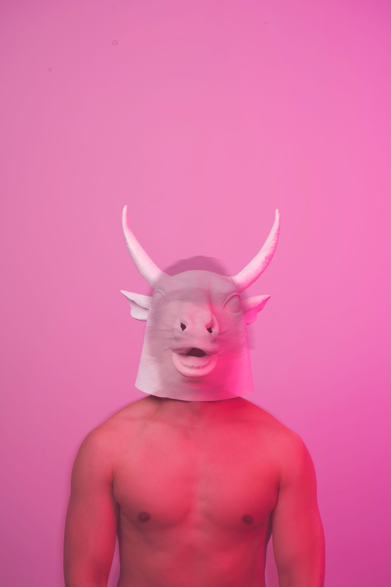
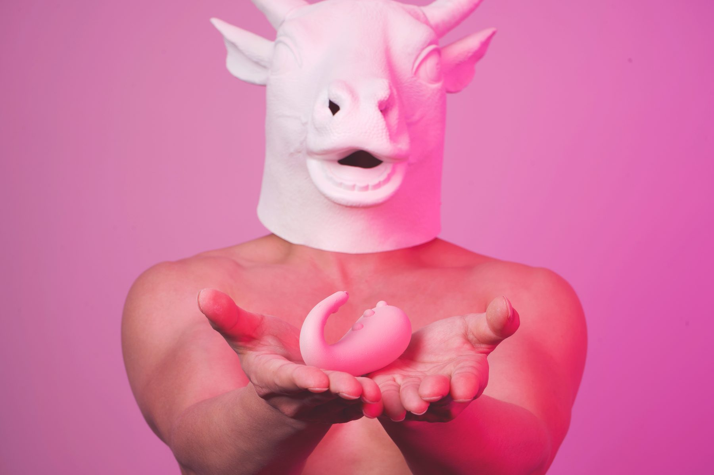

Delicious Me

Based on the subtle connection between vorarephilia and carnism, Delicious Me links the human desire for meat to the desire for sex. It explores the paradox of carnivorous human nature through a set of edible sex toys.
The project starts from furry fandom culture and from vorarephilia, a sexual fetish of swallowing or being swallowed. The design of meat, that is, of animals, is projected onto edible sex toys: a horn for the bull, a tail for the pig, a comb and an egg for the chicken, a foetus for the human.

By swallowing the sex toy of a different species, you evolve into that species. The system proposes a relationship between humans and nature: as we swallow nature, nature swallows us.



Credits
- Main artist and photographer
- Jimmy Chen